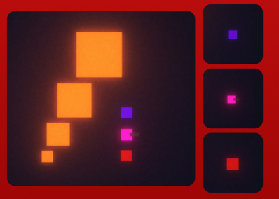

Every move on the beat
The Last Beat is a 2D top-down rhythm shooter where dashing, shooting and reloading only work on the beat.
The music speeds up as you survive, new enemies arrive every minute, and upgrades help you keep up.
A complete game, solo
As a solo developer, my main focus for this project was to:
- Create and refine a rhythm-based combat system
- Challenge myself to develop a complete game independently
- Create an appealing visual style despite my limited 2D/3D art experience
- Design and balance progressive difficulty through playtesting and feedback
- Create VFX and audiovisual feedback to make combat feel impactful
- Compose, mix, and master the soundtrack around the game's rhythm-based mechanics
Synced to the music
Designed a rhythm-based combat system where player movement and attacks are synchronized with the music.
Combat progressively becomes faster as the song changes, with new enemy types introduced every minute to increase the challenge. Players also gain experience to unlock upgrades, allowing them to improve their abilities and adapt to the increasing difficulty.
On the beat
The player's core mechanics are built around rhythm: players can only execute actions like dashing, shooting, and reloading when they are on beat.
Upgrades
Players can get experience from killing enemies to upgrade their stats, to be able to face the increasing difficulty.
Escalating waves

New enemy types are introduced every minute to increase the challenge.
Music & sound
Music composition
The music was designed to establish the game's musical identity and directly support its rhythm-based gameplay. The soundtrack follows a consistent 4-to-the-floor electronic style, creating a strong and predictable rhythmic foundation for combat.
Each track increases in BPM and intensity as the player progresses, matching the increasing difficulty of the game. This creates a clear sense of progression while keeping the music closely connected to the gameplay experience.
Sound implementation
Created and implemented all sound effects using Unity's audio system, ensuring that player actions, enemy interactions, combat, and gameplay events have clear and responsive audio feedback.
Designing within limits
The Last Beat was created with a set of creative limitations, and working inside them shaped every decision I made.
The rules
5 minutes
The game had to last 5 minutes.
One hand
It had to be playable with just 1 hand.
Something I love
It had to be centered around something I love. I chose music.
The process
- Fun core actions: a big part of the process was finding how the player's core actions could be fun and entertaining.
- A living map: making elements move around the map, so the game feels more alive.
- Game feel: creating VFX and an upgrade system to give the player a sense of progression and create meaningful gameplay.
Scoping down
I had plans to create extra classes and weapons, each with a different beat attached to them, but they were out of scope for the time I had. I made an early decision to focus on smaller things and create a more polished game instead.